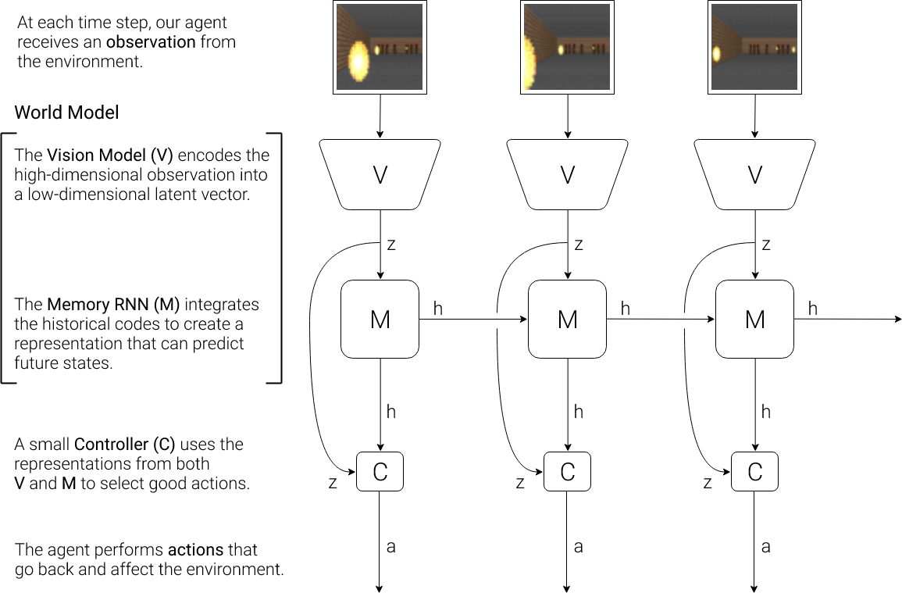
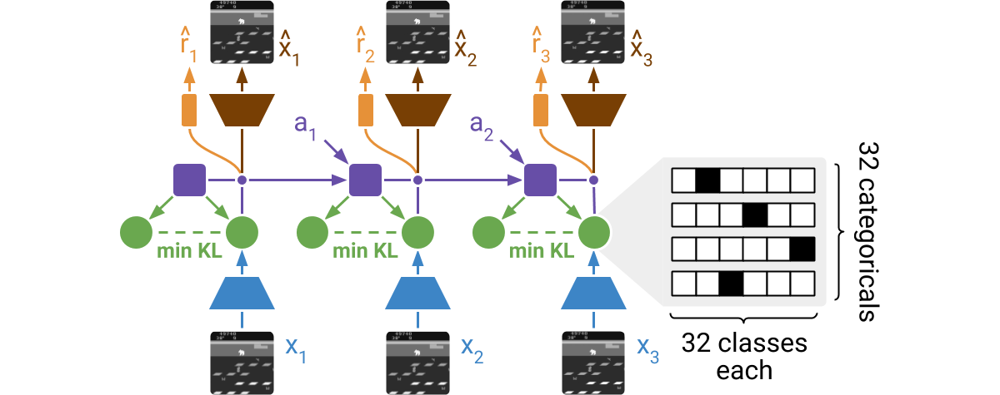
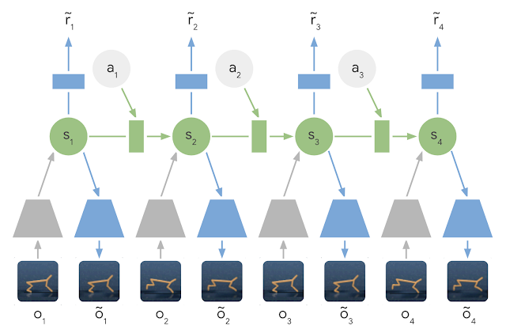
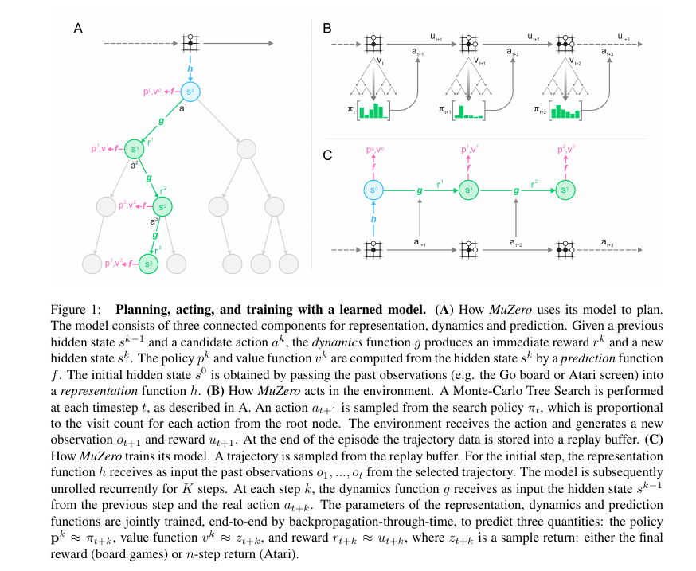
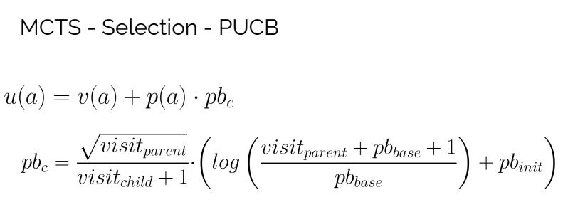
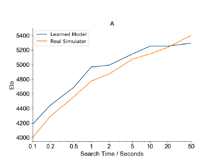

Model Based Reinforcement Learning
Motivation
In the past I have followed DeepMind's RL course and now I'm doing the Hugginface's RL course to remember the concepts. However they do not dig deep into model based RL and that's what I want to do it now.
In Sutton and Barto book I cannot find either anything about model based RL.
I believe world models will play a big role in the road of AGI. Without a world model is not possible to plan, so we need them to achieve complex thinking and reasoning.
Resources
Let's search for learning resources and list them to prioritize them.
Youtube
- Model-free vs Model-based Reinforcement Learning -- Oriol Vinyals (11/10/2020) A talk about AlphaGo, AlphaStar, Alphazero... Some initial ideas about the differences between model-free and model-based but most of the talk is about the experience of Oriol with those mentioned projects.
- World-Models 🌍 Model Based Reinforcement Learning. Describes two challenges of world models: partial observability and randomness
- Pieter Abbel's Lecture on Model-based RL In this video the model is used to improve the policy. The policy is trained using the world model skipping the simulator. That results in better sample efficiency. However it is very different of the planning approach I'm interested in.
- Yannic Kilcher World Models
- Yannic Kilcher Learning model-based planning from scratch Describes a model that learns to plan. Instead of going to an algorithm like MCTS the model learns how to prioritize the planning steps (budget, depth and breath)
- Dreamer v2: Mastering Atari with Discrete World Models
- Harri Valpola: System 2 AI and Planning in Model-Based Reinforcement Learning
Papers
- Model-based Reinforcement Learning: A Survey This is a very good review of all the options when taking the model-based rl approach.
World models

The number of parameters of C, a linear model, is minimal in comparison. This choice allows us to explore more unconventional ways to train C — for example, even using evolution strategies to tackle more challenging RL tasks where the credit assignment problem is difficult.
I find this cite very interesting. So apparently there are challenging tasks were typical RL strategies fails and evolutionary approaches are needed.
To summarize the Car Racing experiment, below are the steps taken:
- Collect 10,000 rollouts from a random policy.
- Train VAE (V) to encode each frame into a latent vector z
- Train MDN-RNN (M) to model
P(z_t+1 | a_t, z_t, h_t)- Evolve Controller (C) to maximize the expected cumulative reward of a rollout.
It is possible to train the model inside the "dream" and transfer the policy to the environment. To be able to that it's necessary to carefully control the temperature when sampling to avoid overfitting to the world model.
In our experiments, the tasks are relatively simple, so a reasonable world model can be trained using a dataset collected from a random policy. But what if our environments become more sophisticated? In any difficult environment, only parts of the world are made available to the agent only after it learns how to strategically navigate through its world.
For more complicated tasks, an iterative training procedure is required. We need our agent to be able to explore its world, and constantly collect new observations so that its world model can be improved and refined over time.
An iterative process is needed for the real world.
The choice of implementing V as a VAE and training it as a standalone model also has its limitations, since it may encode parts of the observations that are not relevant to a task. After all, unsupervised learning cannot, by definition, know what will be useful for the task at hand. For instance, our VAE reproduced unimportant detailed brick tile patterns on the side walls in the Doom environment, but failed to reproduce task-relevant tiles on the road in the Car Racing environment. By training together with an M that predicts rewards, the VAE may learn to focus on task-relevant areas of the image, but the tradeoff here is that we may not be able to reuse the VAE effectively for new tasks without retraining.
That point of view is very interesting. I haven't imagined that using reward as target could harm the generalization of the policy.
Summary: In this paper the world model is not used for planning but for providing a good representation of the world state that a very simple policy can use to learn. They force the policy to be small because they use an evolutionary method to improve the policy.
As a final note from the paper Qualitative Differences Between Evolutionary Strategies and Reinforcement Learning Methods for Control of Autonomous Agents
EAs do not suffer from the sparsity of the reward since they operate on the basis of a fitness measure that encodes the sum of the rewards collected during evaluation episodes. RLs instead, which operate by associating rewards to specific actions, struggle with temporal credit assignment when rewards are sparse. Temporal difference in RL use bootstrapping to better handle this aspect but still struggles with sparse rewards when the time horizon is long.
Dreamer
- Dream to Control: Learning Behaviors by Latent Imagination
- Mastering Atari with Discrete World Models
This is a continuation of the World Models paper. It takes the idea of training on the dream world model to the extreme.
We learn the world model from a dataset of past experience, learn an actor and critic from imagined sequences of compact model states, and execute the actor in the environment to grow the experience dataset.
A virtuous dynamics emerges from this approach:
- If the world model is correct then the agent will learn a good policy for the real world
- If the world model is incorrect the agent will learn a bad policy, but when playing on the real world with that policy it will gather new data that will help to correct the world model
Thus given enough time the algorithm will converge: the world model will be good enough and the
agent will learn a good policy that will transfer to the real world.
Humans do also correct their world model when they find unexpected situations.
The advantages of this approach are:
- Faster simulation. The world model uses the latent space for predicting the transitions and that results on fast predictions. Moreover the GPU can be used to run the model much faster than the CPU
- Better data efficiency. Model based RL methods are more data efficient than model free.

It is similar to a Vector Quantized autoencoder but not exactly the same.
The world model is not used to plan, but to train a policy on the world model. This allows to use 10000 times more data than the real interactions with the environment.
PlaNet: A Deep Planning Network for Reinforcement Learning
In this case the agent needs a world model that it is used to plan the next action. It does not learn a value or policy function like the previous examples. The planning method does not seem to be very advanced or intelligent: as far as I understand it tries random sequences of actions in a monte carlo setup and it takes the first action of the best sequence.

PlaNet solves a variety of image-based control tasks, competing with advanced model-free agents in terms of final performance while being 5000% more data efficient on average.
This is another evidence that model-based methods are more data efficient.
In short, PlaNet learns a dynamics model given image inputs and efficiently plans with it to gather new experience. In contrast to previous methods that plan over images, we rely on a compact sequence of hidden or latent states. This is called a latent dynamics model: instead of directly predicting from one image to the next image, we predict the latent state forward.
Compared to our preceding work on world models, PlaNet works without a policy network -- it chooses actions purely by planning, so it benefits from model improvements on the spot.
I find Planet very interesting, but it is very likely that it could improve planning by adding a policy and a value function. I believe that is what we are going to find in the next MuZero paper.
MuZero: Mastering Go, chess, shogi and Atari without rules

When planning Muzero expands first the actions with the higher value and the higher probability. Eventually all options are explored if the number of simulations is big enough.

The model is trained to learn the following functions: state encoding, transition function, policy and value. As output receives the rewards and the results of the searches. Thus the state encoding and transition function are learned indirectly, they need to work well in order to be able to predict the policy and value.
In this paper, the dynamics function is represented deterministically; the extension to stochastic transitions is left for future work.
This is the main limitation of Muzero, does not work for stochastic environments. To be able to cope with the partial observability of Atari 32 frames are fed to the model to encode the state.
For each board game 1000 TPUs were used for training, so that is a lot of compute power.
So this approach like PlaNet learns a model of the world and it uses for planning. However the planning strategy used by MuZero is more advanced than the used at PlaNet.
It's interesting to see how the ability of the model increases with the size of the search. A difference of 1400 in elo score is massive, it means that it is almost impossible to win.

Mastering Atari Games with Limited Data
In this paper they make 3 modifications to Muzero to be able to train on a small number of frames (100k)
In previous MCTS RL algorithms, the environment model is either given or only trained with rewards, values, and similarity policies, which cannot provide sufficient training signals due to their scalar nature.
To solve the problem they use the observations of the next state also as a target. In the Muzero video this was mentioned and it did not brought improvements. So it seems that it helps in the small data regime.
If we only see the first observation, along with future actions, it is very hard both for an agent and a human to predict at which exact future timestep the player would lose a point. However, it is easy to predict the agent will miss the ball after a game. In this case, the right player didn’t move sufficient number of timesteps if he does not and missed the ball.
The point here is to predict a single value prefix instead of multiple intermediate rewards.
This value target suffers from off-policy issues, since the trajectory is rolled out using an older policy, and thus the value target is no longer accurate. When data is limited, we have to reuse the data sampled from a much older policy, thus exaggerating the inaccurate value target issue we propose to use rewards of a dynamic horizon l from the old trajectory, where l < k and l should be smaller if the trajectory is older
By doing this 3 changes they are able to have good results when training just on 100k frames, for example DQN uses 200 million frames.
Vector Quantized Models for Planning
This paper extends the Muzero approach to stochastic and partially observable environments. To be able to do that it learns a model of the environment that includes the opponent player if there is any. For example on Muzero when playing chess the agent first chooses a move and then chooses a move for the opponent for planning. Instead this agent chooses a move for itself and then samples a transition from the environment.
One drawback of this paper is that it seems to be supervised training, not self-play.
The state is quantized so it is easier to sample from it.
It is able to work both on Chess and DeepMind Lab.
Summary
We have seen many ways of learning and using world models. Probably the closer one to how the brain works is the Vector Quantized Models for Planning because it learns a model of the environment and uses it for planning.
One good thing of this kind of approach is that the model has a policy that could be used to take fast decisions (System 1) but can also use the world model for planning (System 2)
The brain world model is more powerful because it allows to plan in different time scales and it also can be queried using human language.